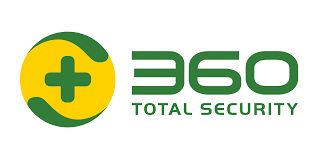
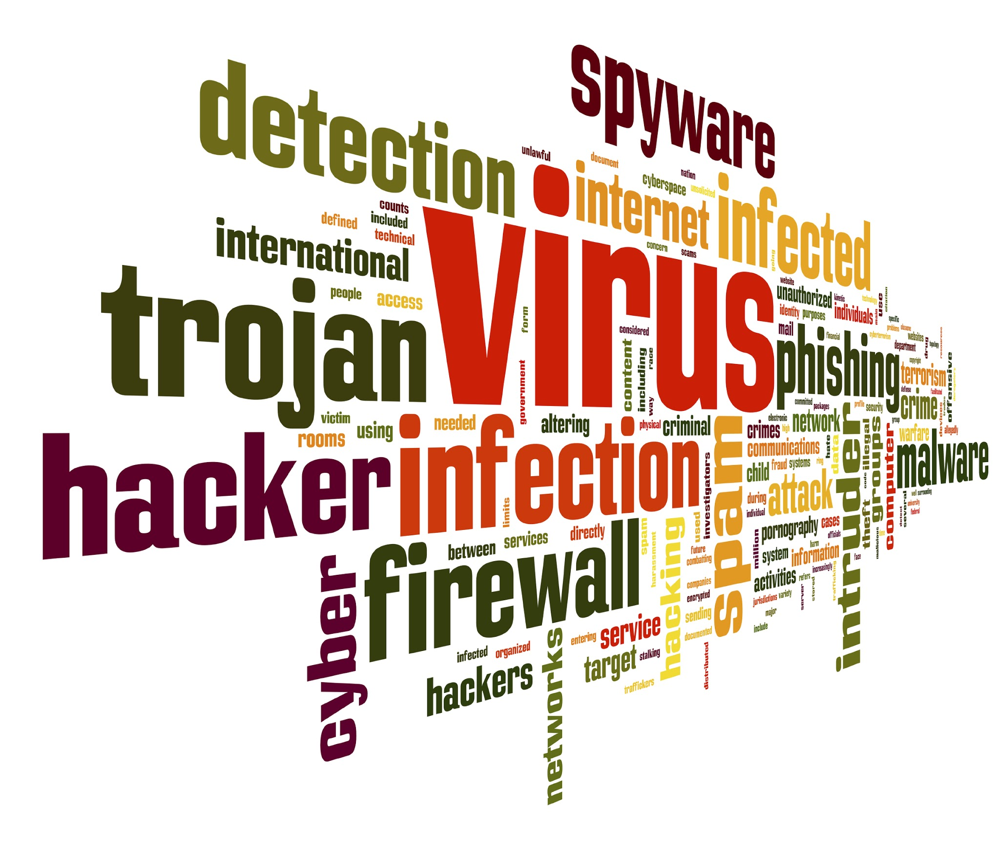

The last couple of months have seen a large rise in the number of computer
viruses that are out there and spreading via e-mail.
The following guidelines may give you a fighting chance.
I have divided this page into two sections - a quick guide for those who
are experienced, or are short on time, and a more detailed section for
anyone wanting more details.
Please do not ignore computer viruses - they can range from nuisance or
joke programs to ones that erase the entire hard disk.

Quick Guide:
Keep a regular backup of your important files (on floppy, zip disk,
writeable CD, tape, another hard disk, etc.)
Be aware that most current viruses arrive as e-mail attachments.
Be very suspicious of any attachment that has any of the following
file extensions:
These attachments almost always arrive from someone you know (without
that person's knowledge), so attachments are not safe just because
you know the sender.
Note: Opening the mail itself is safe, but clicking on any
attachment can spread the virus instantly.
Update your virus scan program now if you haven't done it for over
a month.
For PC users, I recommend the following:
Use a web browser to connect to
http://www.neurophys.wisc.edu/ftp_arch/virus/ and download and
install the latest version of the Command Antivirus program.
Macintosh users, please either use the anti-virus program that came
with your Mac, or consider purchasing Netware Associates Virex
CD from DoIT (approx. $38).
Update the virus definition files regulary, typically once a week
but no fewer than once a month. See the detailed section below for
how to do this.
It is impossible for any anti-virus program to protect against all
new viruses, so your best protection is to be very cautious about
opening e-mail attachments. See below for more details.
Finally, if you do detect (or suspect) a virus, please let me (Ravi)
know so we can keep track of the incidence of outbreaks.
I can also help you clean up the virus.
To update virus definition files:
(These instructions are for Command Anti-virus for Windows only)
Start the Command anti-virus program by double-clicking on the
yellow "C" icon in the lower right corner of your desktop (near
the time).
A window titled "Command AntiVirus" should appear on your desktop
within 10 seconds.
If you have never done this before then you need
to enter the server address for automatic updates.
(If you have already entered the server address previously
then skip to step (2) below).
Click on "Preferences" then select "Advanced..."
Click on the tab labeled "Update Deffiles now"
Select each entry in that Window and click on delete each
time to remove them all.
Click on the "Add" button.
In the Site Path field, enter
http://www.uwex.edu/software/uw-only/f-prot/CSSCntrl/
(note: address is case-sensitive).
Leave the Username and Password fields blank, and click on OK.
Click OK again to return to the main Command AntiVirus window.
Proceed to (2) below and update the Definition Files.
Update Definition Files as follows:
Open the main "Command AntiVirus" window.
Click once only on the button labeled "Update Deffiles"
and watch the Definition Files being updated.
A series of message boxes should appear on the screen showing
the progress of the update. Finally, after a variable time
that depends on network speed, a window appears asking
whether you want to view the results of the update process.
Click on the "No" button.
From the menu, select "Help" and "About Command...."
to view the dates upto which the definition files (SIGN.DEF
and MACRO.DEF) have been updated.
Click on OK and then close the Command AntiVirus window.

You should update your definition files about once a month.
What is a Computer Virus:
A Computer Virus is simply a computer program with malicious intent.
These programs are usually small in size, and the more clever ones
hide themselves within other innocent programs (e.g. within NOTEPAD),
hence the "virus" in their name.
In fact the technical difference between a Computer Virus and a Computer
Worm is that the virus inserts itself within some other legitimate
program, while the Worm exists as a standalone program.
From a user's perspective this distiction is somewhat moot, and
a worm or a virus can do equal damage.
In fact the word "worm" is used less these days, and virus is often
applied to both types of programs.
Viruses are usually written by students with time on their hands,
though a few are very sophisticated and obviously written by
professionals (disgruntled employees, frustrated programmers etc.).
While there are over 30,000 known computer viruses, the number of
truly original viruses is actually quite limited, as seen by the
number of copy-cat viruses that proliferate after any well-publicized
virus incident.
For example, there are apparently several hundered variants of the
"ILoveYou" virus out there.
Most are just plain copies, or minor variations of the original.